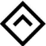

01
Taschenrechner
Ein eigenes Frontend-Projekt mit HTML, CSS und JavaScript. Schwerpunkt war eine verständliche Bedienung und eine saubere technische Struktur.
Über mich
Ich entwickle mich aktuell intensiv im Bereich Anwendungsentwicklung weiter und arbeite daran, meine Kenntnisse nicht nur zu lernen, sondern auch praktisch umzusetzen.
Besonders spannend finde ich Aufgaben, bei denen aus einer Idee Schritt für Schritt eine funktionierende Anwendung entsteht. Dabei lege ich Wert auf Übersicht, saubere Struktur und nachvollziehbare Lösungen.
Mein Ziel ist es, mich fachlich stetig weiterzuentwickeln und Projekte zu bauen, die technisch sinnvoll, optisch modern und für andere gut nutzbar sind.
Projekte
Ein eigenes Frontend-Projekt mit HTML, CSS und JavaScript. Schwerpunkt war eine verständliche Bedienung und eine saubere technische Struktur.
Diese Website wird fortlaufend weiterentwickelt und dient als persönliche Plattform, um Projekte, Lernfortschritte und Links übersichtlich zu präsentieren.
Weitere Projekte, Experimente und Lernstände veröffentliche ich gesammelt auf meinem GitHub-Profil.
Skills
Kontakt
